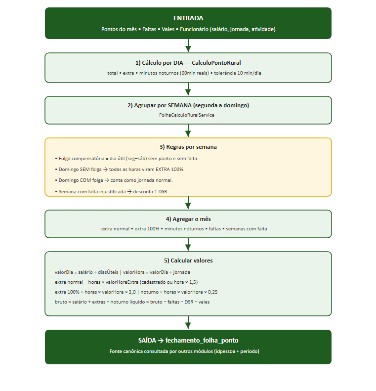
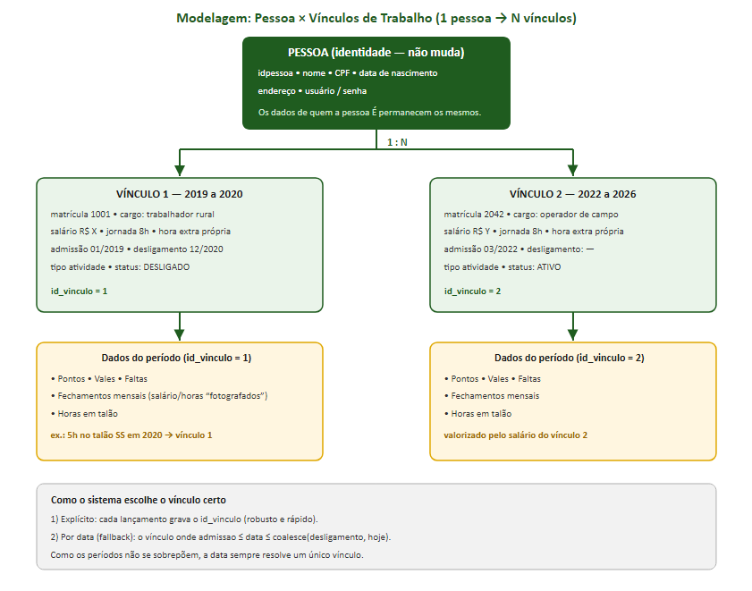

Sistema Agro Tech One — Módulo de Funcionário CLT Rural
Registro de Ponto, Adicional Noturno, DSR e Auditoria
Conformidade: Lei nº 5.889/1973 (Trabalho Rural) e Portaria 671 do MTE
Documento gerado em 27/06/2026
Uso interno — referência para manutenção futura
Este documento descreve todas as alterações realizadas no sistema Agro Tech One referentes ao módulo de Funcionário CLT adaptado para o contexto de propriedade rural. O objetivo central foi transformar o cálculo de horas e valores financeiros em um motor justo e preciso, em conformidade com a legislação do trabalho rural, de modo que as informações (horas trabalhadas e valores) possam ser consumidas por outras partes do sistema.
Premissa importante: o registro do ponto é feito pelo gerente/administrador (não pelo próprio trabalhador no campo). Por isso, os horários de entrada/saída são dados lançados pelo gestor, e a auditoria recai sobre a ação do gestor (quem registrou e quando).
| Item | Detalhe |
|---|---|
| Plataforma | Jakarta EE 10 (Servlets + JSP), sem frameworks |
| Front-end | JSP + Bootstrap 5.3 + jQuery (arquivo único JS/main.js) |
| Banco de dados | PostgreSQL 17 (com herança de tabelas em funcionario) |
| Servidor | Apache Tomcat 10.1.28 (C:\apache-tomcat-10.1.28) |
| Build | Maven Wrapper — mvnw.cmd clean package -DskipTests |
| Java | JDK 24 (JAVA_HOME=C:\Program Files\Java\jdk-24) |
| Serialização JSON | Gson 2.12.1 |
| Data | Bloco | Resumo |
|---|---|---|
| 23/06/2026 | Módulo Funcionário | Correções de login, roteamento de INSERT por tipo, máscaras e vazamentos de recursos. |
| 26/06/2026 | Cadastro CLT + Perfil | Correção de validação de formulário, data de nascimento obrigatória, triggers de integridade (FK x herança), serialização de LocalTime, cálculo de horas extras. |
| 26/06/2026 | Editar/Excluir Ponto | Novo módulo de edição e exclusão de registros de ponto na tela de perfil CLT. |
| 27/06/2026 | CLT Rural | DSR rural, domingo 100%, adicional noturno, tolerância (Art. 58) e auditoria (Portaria 671). |
As migrações ficam em src/main/resources/db/migration/ e são aplicadas via
psql -U postgres -d agro -f <arquivo>.
Arquivo: V2__triggers_integridade_funcionario.sql
funcionario(idpessoa) não enxergavam as linhas das tabelas
filhas (funcionarioclt, funcionariodiarista, funcionarioempreita,
funcionarioproducao). Isso tornava impossível inserir ponto, vale, falta ou folha para qualquer
funcionário.
Solução: as 7 FKs foram substituídas por triggers:
trg_valida_funcionario_existe() — BEFORE INSERT/UPDATE valida o
idpessoa contra a hierarquia completa (um SELECT em funcionario enxerga as
filhas).trg_cascade_delete_funcionario() — AFTER DELETE nas 5 tabelas da
hierarquia, replicando o comportamento ON DELETE CASCADE.Tabelas dependentes cobertas: ponto_eletronico, falta_funcionario,
vale_funcionario, fechamento_folha_ponto, folha_pagamento,
registroponto.
Arquivo: V3__clt_rural.sql (idempotente, com IF NOT EXISTS).
CREATE TYPE tipo_atividade_rural AS ENUM ('LAVOURA', 'PECUARIA');
funcionarioclt| Coluna | Tipo / Default | Finalidade |
|---|---|---|
| tipo_atividade_rural | tipo_atividade_rural NOT NULL DEFAULT 'LAVOURA' | Define a janela do horário noturno. |
ponto_eletronico| Coluna | Tipo | Finalidade |
|---|---|---|
| minutos_noturnos | INT NOT NULL DEFAULT 0 | Horas noturnas rurais (minutos reais). |
| latitude / longitude | NUMERIC(10,7) (nullable) | Reservadas para futuro app móvel do trabalhador. |
| ip_origem | VARCHAR(45) | IP da ação do gestor. |
| user_agent | VARCHAR(255) | Navegador/app do gestor. |
| hash_autenticidade | VARCHAR(64) | SHA-256 de autenticidade do registro. |
| registrado_por | INT | idpessoa do gestor/admin que lançou. |
| atualizado_em | TIMESTAMP | Timestamp do servidor na última edição. |
fechamento_folha_pontoEsta tabela é a fonte canônica consultada por outros módulos (chave idpessoa + periodo).
| Coluna | Tipo | Finalidade |
|---|---|---|
| desconto_dsr | NUMERIC(10,2) | Desconto do descanso semanal remunerado. |
| valor_adicional_noturno | NUMERIC(10,2) | Adicional noturno (25%). |
| valor_extra_100 | NUMERIC(10,2) | Horas extras 100% (domingo sem folga). |
| minutos_noturnos | INT | Total de minutos noturnos no mês. |
| minutos_extra_100 | INT | Total de minutos de domingo a 100%. |
minutos_noturnos) e servem de base para o
adicional de 25%.CalculoPontoRural (a nuance de 5 min por batida
fica absorvida pela banda diária e documentada no código para refinamento futuro).| Grandeza | Fórmula |
|---|---|
| Valor do dia | salário ÷ dias úteis do mês |
| Valor da hora (base) | valor do dia ÷ jornada (horas/dia) |
| Valor hora extra (efetivo) | valor cadastrado se > 0; senão valor da hora × 1,5 |
| Hora extra normal | (min. extras ÷ 60) × valor hora extra efetivo |
| Hora extra 100% (domingo) | (min. 100% ÷ 60) × valor da hora × 2,0 |
| Adicional noturno | (min. noturnos ÷ 60) × valor da hora × 0,25 |
| Desconto faltas | nº faltas injustificadas × valor do dia |
| Desconto DSR | nº semanas com falta × valor do dia |
| Salário bruto | salário + extra normal + extra 100% + adicional noturno |
| Salário líquido | bruto − faltas − DSR − vales (mínimo zero) |
salário ÷ dias úteis para preservar a consistência
com o restante do sistema. Pode tornar-se configurável (ex.: divisor 30) em manutenção futura.ip_origem (cabeçalho X-Forwarded-For ou
getRemoteAddr), user_agent, registrado_por (idpessoa da sessão
usuarioLogado) e os timestamps de servidor criado_em/atualizado_em.Util.HashUtil.sha256) calculado sobre string canônica do registro
(idfunc | data | horários | minutos | registrado_por), permitindo detectar adulteração.latitude/longitude permanecem nulas neste fluxo — reservadas para uma futura tela/app
em que o próprio trabalhador registre o ponto no campo.| Arquivo | Responsabilidade |
|---|---|
| db/migration/V3__clt_rural.sql | Migração do schema rural. |
| Model/Model/TipoAtividadeRural.java | ENUM Lavoura/Pecuária; cálculo de minutos noturnos (janela que cruza a meia-noite, minutos reais). |
| Service/CalculoPontoRural.java | Cálculo de 1 dia: total, tolerância (10 min/dia), minutos noturnos. |
| Service/FolhaCalculoRuralService.java | Fechamento mensal: semana seg–dom, folga compensatória, domingo 100%, DSR e adicional noturno. |
| Util/HashUtil.java | Hash SHA-256 de autenticidade. |
| Arquivo | Alteração |
|---|---|
| Model/Model/FuncionarioCLT.java | Campo tipoAtividadeRural; constante ADICIONAL_NOTURNO_PCT = 0.25. |
| Model/Dao/FuncionarioCLTDAO.java | Leitura/gravação do tipo de atividade; updateSalario passa a receber o tipo. |
| Model/Model/PontoEletronico.java | Campos minutosNoturnos e auditoria (lat/long, IP, UA, hash, registradoPor). |
| Model/Dao/PontoEletronicoDAO.java | Cálculo rural ao salvar/atualizar; persiste minutos noturnos + auditoria + hash. |
| Model/Model/FechamentoFolha.java | Campos: descontoDsr, valorAdicionalNoturno, valorExtra100, minutosNoturnos, minutosExtra100. |
| Model/Dao/FechamentoFolhaDAO.java | Upsert e leitura das novas colunas. |
| Controller/ControllerCLT.java | handleCalcularFechamento delega ao FolhaCalculoRuralService; handleAtualizarSalario recebe o tipo de atividade. |
| Controller/ControllerPontoEletronico.java | preencherAuditoria (IP/UA/registradoPor); ação editar_ponto. |
| webapp/view/admin/perfilCLT.jsp | Seletor de Tipo de Atividade; coluna "Noturno"; novas linhas de fechamento. |
| webapp/JS/main.js | Header com atividade; tabela de ponto com badge noturno; renderFechamento com DSR, extra 100% e adicional noturno; envio do tipo no salvar salário. |
| Bug | Causa | Correção |
|---|---|---|
| Cadastro CLT não validava campos | JS procurava seletor .required (classe) mas os inputs usam o atributo HTML required. | Seletor corrigido para [required]. |
| Cadastro CLT falhava no banco | datanascimentopf é NOT NULL e podia ir vazio. | Validação obrigatória no servidor e no JS (formato dd/mm/aaaa). |
| Perfil CLT retornava vazio (HTTP 200) | Gson sem adaptador para LocalTime (falha de reflexão no Java moderno). | Adicionado registerTypeAdapter(LocalTime.class, ...). |
| Horas extras davam R$ 0,00 | Fechamento multiplicava o campo manual valorhoraextra (zerado). | Helper valorHoraExtraEfetivo (cadastrado > 0 ou salário × 1,5). |
| "Lançar Ponto" nunca funcionou | Payload sem acao e com idpessoa em vez de idfuncionario. | salvarPontoCLT corrigido; nova ação editar_ponto. |
cd C:\projeto\agro .\mvnw.cmd clean package -DskipTests # gera target\agro-1.0-SNAPSHOT (exploded) e o .war # Aplicar migração de banco (quando houver nova): & "C:\Program Files\PostgreSQL\17\bin\psql.exe" -U postgres -d agro -f src\main\resources\db\migration\V3__clt_rural.sql # Redeploy no Tomcat (recarrega o contexto /agro): # - tocar o descriptor conf\Catalina\localhost\agro.xml (atualiza LastWriteTime), OU # - reiniciar com JAVA_HOME=C:\Program Files\Java\jdk-24 e CATALINA_HOME=C:\apache-tomcat-10.1.28
Funcionário de teste: eduardo (idpessoa = 50), salário R$ 1.600,00, jornada 8h, atividade Lavoura, período 2026-06.
| Cenário | Entrada | Resultado (OK) |
|---|---|---|
| Tolerância (Art. 58) | Saída 17:04 (4 min além) | Total 484 min, extra = 0. |
| Turno noturno | 21:00 às 05:00 | 480 minutos noturnos contabilizados. |
| Domingo COM folga | Domingo 21/06 (sábado 20 sem ponto) | Conta como jornada normal. |
| Domingo SEM folga | Domingo 28/06 (semana toda trabalhada) | 480 min como extra 100% → R$ 145,45. |
| Adicional noturno | 8 h noturnas | R$ 18,18 (8 × valor hora × 0,25). |
| DSR | 1 semana com falta (17/06) | Desconto DSR R$ 72,73. |
| Auditoria | Lançamento via gestor admin | registrado_por=27, IP, User-Agent e hash preenchidos. |
Fechamento final validado: Salário base R$ 1.600,00; extra normal R$ 88,64; extra 100% R$ 145,45; adicional noturno R$ 18,18; desconto faltas R$ 72,73; desconto DSR R$ 72,73; vales R$ 400,00; líquido R$ 1.306,81.
idpessoa nas tabelas dependentes é mantida por triggers
(V2), não por FKs nativas — devido à herança de tabelas. Ao criar novas tabelas que referenciem funcionário,
replicar o padrão do trigger trg_valida_funcionario_existe.fechamento_folha_ponto é a fonte para outros módulos. Manter todos os
valores granulares persistidos ao alterar o cálculo.latitude/longitude já existem (nulas). Para um app do
trabalhador no campo, capturar via API de geolocalização do navegador e enviar no payload do ponto.CalculoPontoRural.PECUARIA (janela 20h–04h); basta selecionar no cadastro.O fechamento mensal é produzido por Service.FolhaCalculoRuralService. O fluxo abaixo resume as
etapas, do dado de entrada à persistência na tabela canônica.

A tabela fechamento_folha_ponto é a fonte oficial de horas e valores já calculados. Os exemplos
abaixo mostram como outros módulos podem consumir esses dados (chave idpessoa + periodo,
formato AAAA-MM).
SELECT ff.*, p.nomepessoa FROM fechamento_folha_ponto ff JOIN pessoa p ON p.idpessoa = ff.idpessoa WHERE ff.idpessoa = 50 AND ff.periodo = '2026-06';
SELECT periodo,
COUNT(*) AS funcionarios,
SUM(salario_bruto) AS total_bruto,
SUM(salario_liquido) AS total_liquido,
SUM(valor_horas_extras) AS total_extra_normal,
SUM(valor_extra_100) AS total_extra_100,
SUM(valor_adicional_noturno) AS total_noturno,
SUM(desconto_dsr) AS total_dsr
FROM fechamento_folha_ponto
WHERE periodo = '2026-06'
GROUP BY periodo;
SELECT p.nomepessoa,
SUM(ff.total_minutos_extras) / 60.0 AS horas_extra_normal,
SUM(ff.minutos_extra_100) / 60.0 AS horas_extra_100,
SUM(ff.minutos_noturnos) / 60.0 AS horas_noturnas
FROM fechamento_folha_ponto ff
JOIN pessoa p ON p.idpessoa = ff.idpessoa
WHERE ff.periodo LIKE '2026-%'
GROUP BY p.nomepessoa
ORDER BY horas_extra_normal DESC;
SELECT p.nomepessoa,
(ff.total_minutos_extras + ff.minutos_extra_100) / 60.0 AS horas_extras
FROM fechamento_folha_ponto ff
JOIN pessoa p ON p.idpessoa = ff.idpessoa
WHERE ff.periodo = '2026-06'
ORDER BY horas_extras DESC
LIMIT 10;
Para evitar repetir os JOINs e cálculos, sugere-se criar uma view que outros módulos consultem
diretamente:
CREATE OR REPLACE VIEW vw_folha_resumo AS
SELECT ff.idpessoa,
p.nomepessoa,
ff.periodo,
ff.salario_base,
ff.salario_bruto,
ff.salario_liquido,
ff.total_minutos_extras AS min_extra_normal,
ff.minutos_extra_100 AS min_extra_100,
ff.minutos_noturnos AS min_noturno,
ff.valor_horas_extras AS valor_extra_normal,
ff.valor_extra_100,
ff.valor_adicional_noturno,
ff.desconto_faltas,
ff.desconto_dsr,
ff.total_vales,
ff.fechado_em
FROM fechamento_folha_ponto ff
JOIN pessoa p ON p.idpessoa = ff.idpessoa;
Para suportar o caso de um trabalhador que sai e volta à empresa (ex.: trabalhou 2019–2020 e retornou 2022–2026), o sistema separa a Pessoa (identidade) do Vínculo (período de trabalho). Uma pessoa pode ter N vínculos não sobrepostos, cada um com seus próprios salário, hora extra, jornada, cargo, atividade e datas — preservando o histórico de cada passagem.

vinculo_empregaticioCriada na migração V4__vinculo_empregaticio.sql. Colunas: id_vinculo,
idpessoa, tipo_funcionario, cargo, tipo_atividade_rural,
data_admissao, data_desligamento (NULL = ativo), salario_mensal,
valor_hora_extra, carga_horaria_diaria, status,
motivo_desligamento. Um índice único parcial (uk_vinculo_ativo) garante no máximo
1 vínculo ativo por pessoa. A integridade de idpessoa é mantida por trigger (mesmo padrão da V2).
A matrícula permanece em funcionario (constante por pessoa).
A migração V5__id_vinculo_operacional.sql adicionou a coluna id_vinculo em
ponto_eletronico, vale_funcionario, falta_funcionario,
fechamento_folha_ponto, folha_pagamento, lancamento_producao e
registroponto (com backfill por data). Em novos lançamentos, os DAOs resolvem o vínculo pela
data (admissao ≤ data ≤ coalesce(desligamento, hoje)). Como os períodos não se sobrepõem,
sempre resolve um único vínculo. Assim, "5h em um talão de 2020" ficam atribuídas ao vínculo de 2019–2020.
| Fase | Entrega |
|---|---|
| Fase 1 | Tabela vinculo_empregaticio + trigger + índice único; migração dos funcionários atuais (1 vínculo cada); Vinculo/VinculoDAO; cadastro cria vínculo e trata readmissão (CPF existente sem vínculo ativo → novo vínculo). |
| Fase 2 | id_vinculo nas tabelas operacionais + backfill por data; DAOs gravam o vínculo nos novos lançamentos. |
| Fase 3 | Fechamento e perfil leem salário/jornada/atividade do vínculo do período; header mostra o período; ações Desligar e Readmitir; badge/botões refletem o estado atual da pessoa. |
Pessoa de teste com 2 vínculos: fechamento de 2020 usou o salário do vínculo 2019–2020 (R$ 1.000) e o de
2023 usou o do vínculo 2022–… (R$ 2.000), cada um gravando o id_vinculo correto. Desligar +
readmitir abriu um novo vínculo ativo mantendo os anteriores como histórico.
fechamento_folha_ponto agora carrega
id_vinculo, permitindo relatórios por pessoa ou por período de trabalho.| Recurso | Valor |
|---|---|
| Aplicação | http://localhost:8080/agro/ |
| Login administrador | usuário admin / senha 123456 |
| Banco PostgreSQL | psql -U postgres -d agro (porta padrão) |
| Perfil CLT (exemplo) | /view/admin/perfilCLT.jsp?id=50 |
— Fim do documento —